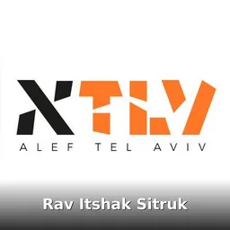

La véritable relation avec Dieu - Rav Itshak Sitruk
#emouna #torah #hashem
Cours de Torah — disponibles sur vos plateformes favorites

Bienvenue sur le podcast du Rav Itshak Sitruk, une voix spirituelle et pédagogique majeure pour la communauté juive francophone. Poursuivant l'héritage lumineux de son père, le Grand Rabbin Rav Yossef Haim Sitruk zatsal, le Rav Itshak offre des enseignements profonds et accessibles qui nourrissent l'âme et enrichissent la pratique quotidienne de la Torah. Ses shiourim, ses réflexions halakhiques et ses pensées spirituelles vous accompagneront vers une compréhension plus intime de notre tradition millénaire, en connectant la sagesse ancienne aux défis contemporains de notre vie.
Le podcast est votre compagnon idéal pour continuer à apprendre, peu importe où vous êtes. Pendant vos trajets en voiture, vos courses, une simple promenade avec le téléphone dans la poche : chaque moment devient une opportunité précieuse d'étude. Progressez à votre rythme, suivez vos épisodes écoutés et ressentez la fierté profonde de voir vos connaissances grandir, jour après jour. Cette croissance spirituelle, cette progression constante dans l'étude de la Torah, nourrit l'âme et renforce votre lien avec le Créateur.
Au-delà de la commodité, ce podcast protège votre sanctuaire intérieur. Contrairement aux plateformes vidéo où des contenus inappropriés apparaissent souvent aux côtés de l'enseignement authentique, menaçant la pureté du cœur, des yeux et des oreilles, notre format podcast crée un espace préservé. Vos enfants peuvent écouter en toute sécurité, sans exposition à des images ou messages contraires aux valeurs de notre tradition. Sans publicités interrompant votre étude, sans distractions visuelles détournant de votre intention, vous goûtez à une expérience d'apprentissage pure et sanctifiée.
#emouna #torah #hashem

On dit facilement : « Hachem est mon Dieu ». Mais qu’est-ce que cela implique réellement ? Dans ce cours, Rav Itshak Sitruk nous amène à nous poser une question beaucoup plus profonde : à partir de q…

#torah #emouna #avis

Apprendre à écouter sa conscience #torah #emouna #conscience #intelligence #daat

#torah #emouna #réussite

#torah #emouna #lavieestunrêve #vivre

#torah #emouna #hashem #elloul #roshhashana #roshhashanah

#roshhashana #roshhashanah #emouna #torah #spiritualité

Les 2 jours de Roch Ashana qui correspondent aux 2 jugements #torah #emouna #hashem #jugement

#torah #emouna #accepter #comprendre #réussir #réussirsavie

#torah #emouna #confiance #confianceendieu #acceptation

#torah #confianceendieu #compréhension #emouna #bitahon

#torah #emouna #faire #comprendre

#torah #emouna #couronne #comprendrelemonde #action

#torah #emouna #17tamouz #9av #hashem #anecdote #comprendre #explorateur

#torah #motivation #emouna #effort #paradis

#torah #emouna #17tamouz #9av #hashem #anecdote #effort #devarim #kotel

#torah #emouna #17tamouz #9av #hashem #anecdote #effort #devarim

#hashem #faute #amour #torah #emouna

#torah #maladie #malade #emouna #shekhinah


#simha #joie #tristesse #emouna #torah #hashem

#torah #emouna #17tamouz #9av #joie #joie2vivre #simha

#torah #17tamouz #tishabeav #9av #machiah

#torah #emouna #spirituality #spiritualité

#torah #emouna #bethamikdash #temple #jerusalem #17tamouz #9av

#torah #reconnaissance #emouna

#torah #temps #bonheur #bonheurintérieur

#rashi #torah #emouna #humble #sage

#torah #emouna #attente

#torah #emouna #balak #orgueil #avraham

#compassion #anecdote #torah #emouna

#torah #emouna #lashonhara #moises #moise #reconnaissance #reconnaissant #reconnaissante

Retrouvez nous 1 lundi sur 2 pour le cours du Rav Itshak Sitruk et plusieurs jours par semaine pour le cours après la tefila #torah #emouna #attente #temps #hashem

Savoir faire les effort pour D.ieu et non pour nous et ne pas regretter une bonne action #torah #emouna #bitachon


#prière #torah #shemaisrael #emouna


#torah #parasha #effort #emouna


00:00 Introduction 02:25 Arrêter de vouloir plaire (besoin de validation extérieur) 11:00 Respecter ses parents à tout prix ? 21:50 Comment se rendre compte qu’on est dans une mauvaise situation +…


Pirke Avot video du 14/9/2022


Clip réalisé par Jet Set Prod http://www.jetsetprod.com/

Clip réalisé par Jet Set Prod http://www.jetsetprod.com/

Clip réalisé par Jet Set Prod http://www.jetsetprod.com/

Clip réalisé par Jet Set Prod http://www.jetsetprod.com/

Grande campagne de levée de fonds en faveur des institutions ALEF Tel-Aviv, à la mémoire du Grand Rabin Yossef Haïm Sitruk Z”L. Grâce à vos dons nous pourrons réaliser : - La construction d’un nouve…

Video pour le gala du centre Alef à TLV 124 Rothschild, Tel-aviv Réalisé par melting-spot.net